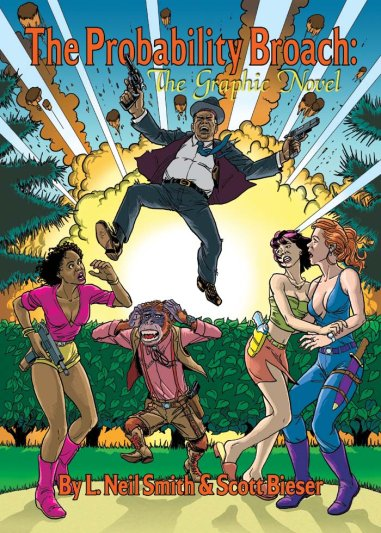

The Probability Broach:
The Graphic Novelby L. Neil Smith and Scott Bieser
publication date: November 2004 from BigHead Press
ISBN: 0974381411
A Message from L. Neil Smith
Dear Friends and Readers,
I'm pleased to announce that our old friends Win Bear, Ed Bear, Clarissa MacDougall Olson, Lucy Kropotkin, Captain Forsyth, Jenny Smyth/Noble, Olongo Featherstone-Haugh, and the rest of the gang from my first novel, The Probability Broach, have been brought to life again.
(Originally published by Del Rey Books in 1980, and later by Tor Books, The Probability Broach won me the first of three Prometheus Awards, and is considered by many to be the definitive libertarian novel.)
This time, they're characters in The Probability Broach: The Graphic Novel, which has just been released by BigHead Press. The brilliant artist Scott Bieser and I worked closely together in designing the characters' appearance, their setting, and translating the original prose story into a graphic script. Scott then spent the better part of two years rendering it into 185 pages of absolutely eyepopping art.
Please see [this link] for a sample.
Assisting Scott in this task was the enigmatic (and very silly) Internet artist known only as "~3~", who added luxurious computer coloring.
It's been immensely satisfying to work with Scott on this book. He seems almost to possess a direct connection to the creative lobe of my brain, and his renderings are nearly exactly what I envisioned when I wrote the original story.
Long-time fans of The Probability Broach will finally get to see the characters, the high-speed hover-cars, the plain and fancy weaponry, the underground shopping malls, and the giant ziggurat of the LaPorte Paratronics Building as it towers high over downtown LaPorte.
They'll also get re-acquainted with the bad guys, like the kill-crazed Federal Security cop, Oscar Burgess, the evil Hamiltonian mastermind Manfred von Richtoven, his oversized henchman Kleingunther, the politically correct Otis Bealls, and even the burglar, Tricky Dick Milhous.
We also hope that presenting The Probability Broach in this bright new format will enable us to reach new minds, and further spread the ideals of liberty and independence that are the basis for this story about a culture that truly is kinder and gentler than the one we live in, because it is a society of people who own their own lives.
For the holiday shopping season, this full-color volume has a suggested retail price of $19.95 and is available online from Laissez-Faire Books and from Renaissance Books, as well as better comic-book retail stores near you. BigHead Press plans a wider distribution of the book next Spring.
For questions about bulk purchases, please contact Scott at sbieser@bigheadpress.com. More details about the book and its publisher may be found at www.bigheadpress.com.
Thanks for "listening",
L. Neil Smith
Publisher
Order The Probability Broach: The Graphic Novel at:
Click here for an online preview